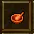
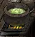
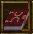

Trades: potions, food and the rest
Each section answers the same five questions in the same order: is it for you, how to start, how to level, what it makes that a character of level 1 to 50 wants, and which quests feed it.
Two rules hold for everything you eat or drink, by the wiki's page on foods: one food and one drink can be active at a time, and taking a second food replaces the first. Since September 2022 a food lasts 30 minutes and a brewed drink 60. What food and drink add does not count towards what gear asks of you (Help Menu).
Prices given as "priced at" are the value in the game's item table. What a shop asks moves with your standing.
Alchemy, with Foraging

The Alchemist's MortarWiki
A cauldronWikiThe Mystic Orb of AlchemyWiki
The Tome of JandrosWikiAlchemy turns parts of creatures and one plant into potions. For a mage it is the natural first trade: it leans on Intelligence, and its main ingredient has to be enchanted with a Nature spell. For anyone else it is a detour, because magic shops sell potions (Help Menu), a Potion of Minor Healing is priced at 25 gold, and quests hand out the better ones in tens (30 Potions of Greater Healing from "Sting Operation" in Krog alone).
How to start
| You need | Price | Where |
|---|---|---|
| Alchemist's Mortar | 939 | Magic shops: Valinor 783,114; Krog 3121,3768; Silvest 1101,1359; Whisperdale 403,3435; Lotor's Summer Palace 756,677 |
| Alchemy Guidebook (optional) | 50 | The same shops, on Valinor too. It holds the five recipes below skill 15 |
| A cauldron | Free to use | "In almost every magic shop", by Dragoneer's Den. Click it to light it |
| Foraging Stick | 175 | Farm shops. The Farming trainer on Valinor gives one |
| A wand and a Rune of Nature | The Nature trainer on Valinor gives both |
- Forage Bloodroot: click the stick, then a bush or a patch of flowers. Keep at one spot until the game says there is nothing left. Bloodroot can be planted too, and Cave Slugs (level 11) drop it.
- Enchant it. Plain Bloodroot does not work in a recipe. Cast Enchant Flora, a Nature spell that needs only the Rune of Nature, on it.
- Click each ingredient, then the mortar. Then click the mortar and the lit cauldron, and wait.
The mortar is the one real cost. Our reading: on Valinor, where quests pay 100 gold at a time, a character who is not a mage is better off waiting for the mainland.
Levelling. The recipe levels are AE Database's, and they agree with the game's own Alchemy guidebook since the patch of September 2022 moved every minor potion to 14 or below. The wiki's table and Dragoneer's Den still show the older recipes for two of them. The ladder is our reading of those levels, chosen for cheap ingredients. Nobody has written down a tested one, and no source says that a harder recipe pays more experience.
| Skill | Make | Needs | Why |
|---|---|---|---|
| 0 to 6 | Potion of Minor Healing | 1 Ear of Bat (Bats, level 1), 1 Enchanted Bloodroot | The only recipe at 0, and you will drink them |
| 6 to 10 | Potion of Cure Minor Poison | The same, and 1 Scorpion Sting (Scorpions, level 5) | One more ingredient, from a level 5 creature |
| 10 to 14 | Potion of Minor Poison | 2 Ant Legs (Fire Ants, level 8), 1 Scorpion Sting | No Bloodroot, so no foraging and no spell. From 10 the Alchemy Taskmaster is open |
| 14 to 22 | Potion of Minor Repair | 1 Rat Tail (Rats, level 1; Krog Rats, 11), 2 Warg Teeth (Wargs, level 14) | No Bloodroot either, and you use every one |
| 22 to 44 | Potion of Healing | 1 Ear of Bat, 2 Enchanted Bloodroot | 250 health for two Bloodroot: the potion worth making in bulk |
| 44 to 52 | Blood Bandage | 1 Enchanted Bloodroot, 1 Torn Silk Bandage (dropped by some 90 kinds of creature, from level 5) | One Bloodroot each |
| 52 on | Potion of Greater Healing | 3 Enchanted Bloodroot, 1 Shambleweed (Shamblers, level 22; Swamp Slugs, 27) | 550 health, from ingredients of level 22 creatures |
Three recipes in that range look tempting and are out of reach: the Potion of Tanning (20) and the Acid Potion (32) need Sulphur, which takes Mining 45, and the Potion of Stamina (24) needs Mandrake, which takes Foraging 70.
What it makes for level 1 to 50. Effects from the game's item table unless said otherwise.
| Potion | Skill | What it does | Needs |
|---|---|---|---|
| Potion of Minor Healing | 0 | +75 health | 1 Ear of Bat, 1 Enchanted Bloodroot |
| Potion of Minor Stamina | 4 | +50 stamina | 1 Bear Claw (Small Grizzly Bears, level 8), 2 Toad Eyes (Plague Toads, 11) |
| Potion of Cure Minor Poison | 6 | Cures weak poison (AE Database) | 1 Ear of Bat, 1 Enchanted Bloodroot, 1 Scorpion Sting |
| Potion of Cure Minor Disease | 8 | Cures weak disease (AE Database) | 1 Ant Leg, 1 Enchanted Bloodroot, 1 Scorpion Sting |
| Potion of Minor Repair | 14 | Gives 50 health back to a piece of gear (AE Database) | 1 Rat Tail, 2 Warg Teeth |
| Potion of Healing | 22 | +250 health | 1 Ear of Bat, 2 Enchanted Bloodroot |
| Potion of Cure Poison | 26 | Cures ordinary poison (AE Database) | 2 Ears of Bat, 3 Enchanted Bloodroot, 2 Scorpion Stings |
| Potion of Cure Disease | 28 | Cures ordinary disease (AE Database) | 2 Deadroot (Deadwillow Roots, level 24), 3 Enchanted Bloodroot, 1 Torn Silk Bandage |
| Potion of Plant Growth | 30 | Crops grow faster (AE Database) | 1 Deadroot, 1 Shambleweed, 1 Toad Eye |
| Blood Bandage | 44 | Heals and cures, with +20 First Aid | 1 Enchanted Bloodroot, 1 Torn Silk Bandage |
| Potion of Greater Healing | 52 | +550 health | 3 Enchanted Bloodroot, 1 Shambleweed |
Beyond 50, by AE Database's levels: Potion of Repair (64, +125 to an item), Superior Repair (74, +275) and Greater Repair (84, +600); Greater Stamina (80, +325); the unguents that turn plain ammunition into flame, frost, poison or disease ammunition (36 to 68); the Oil of Restoration (92), which raises a dead player; Dragons Essence (94: +10 Str, -10 Con, health and stamina regeneration, on top of a food); and the Potion of Immaculate Restoration (100: +625 health and cures everything). Their ingredients come from giants, trolls, wyverns and dragons.
Foraging has its own ladder, from AE Database and the patch notes. Anything not listed is found at level 0.
| Foraging | Opens | Used for |
|---|---|---|
| 0 | Bloodroot, grapes, pecans, the seeds of every common crop | Alchemy, farming |
| 20 | The Heavy Foraging Stick (+10) can be used | |
| 25 | Malacinth Seed | Malacinth cloth for tailors |
| 35 | Dolas Fern | |
| 45 | Wild Mushrooms; the Enchanted Foraging Stick (+20) | A food: +6 Int, with a chance to poison you |
| 55 | Raw Mushroom Steak | Roasts into +3 Int +3 Dex |
| 70 | Bitterwood Ash, Mandrake Seed, in Hell and the Badlands | The stamina and repair potions |
| 90 | Luna Root |
Quests that feed it
| Quest | Where | What | Gives |
|---|---|---|---|
| The Alchemist's ApprenticeAE Guides · Wiki | Alchemist Baki, Valinor (781,115) | 2 Blue Topaz, as often as you like | A Potion of Minor Healing each time |
4 pictures of The Alchemist's Apprentice | |||
| Quite EntrancedAE Guides · Wiki | Etrois, Silvest, by the tanning vats | Forage 43 Bloodroot, then 23 Scorpion Stings, 13 Toad Eyes | Pool, and the Mystic Orb of Alchemy. It pays nothing into Alchemy itself, but the 43 Bloodroot are your Foraging start |
| Unusual ScienceWiki | Ozial, mage shop of Ringhaven Citadel (Talazar's Revenge) | Four trophies from creatures of the far north, wyverns and frost giants among them | 121,000 Alchemy experience by the wiki, and the recipe of the Tonic of Frost Resistance. Far beyond a beginner |


 AE
AE


 AE
AE AE
AE AE
AE AE
AECooking: Roasting, Mixing and Baking
Cooking is three skills. Roasting turns raw meat and fish into food over any fire. Mixing makes dough in a bowl, and Baking turns the dough into bread, cake or pie in an oven. Roasting is for everyone from the first hour: it needs no tool and the meat falls out of what you kill anyway. Mixing and Baking are worth it once you grow your own wheat, or if you want the pies, which are the only cheap food that also speeds up your stamina.
How to start
The Cooking trainer on Valinor (753,104) gives the whole kit for nothing: bowl, spoon, a full bucket, one bag of flour and two books. His six tasks are the best first lessons: 10 bread doughs, 10 cooked spider legs, 10 loaves of plain bread, 5 baked biscuits, 10 cooked chicken legs, and then Frump the Cook for his spoon.
| You need | Price | Where |
|---|---|---|
| Mixing Bowl, Mixing Spoon | 18 and 13 | Taverns ("food and cooking supplies", Help Menu). A carpenter can make the bowl at level 2 |
| Empty Bucket | 75 | Shops; a carpenter can make one (Dragoneer's Den). Fill it at a well; a full bucket serves four recipes |
| Flour Bag | 8 | On Valinor the provisioner at 734,115 (AE Guides); or mill your own |
| Empty Milk Bottle | Provisioners. Click a cow, then the bottle. A full bottle serves four recipes | |
| Eggs | 4 | Click a chicken, or buy them |
| Cake Knife | 45 | "Store bought", by Dragoneer's Den. Pies and cakes must be cut before they can be eaten |
| An oven | Free to use | In pubs, taverns and general stores. Click it to light it |
| A mill | Free to use | "In most towns". It grinds wheat, sugar cane and cinnamon |
| A fire, for roasting | 2 for a piece of Kindling | An oven, a campfire, or the Nature spell Ignite |
To roast, click the raw meat, then the fire. To mix, click each ingredient and then the bowl, then the spoon and then the bowl. To bake, click the dough and then the lit oven. Up to five pieces can go in at once. A failed mix destroys the ingredients.
Levelling. Here the sources fail. AE Database and the wiki list every Mixing recipe at level 0, and Dragoneer's Den says in so many words that "there is not a posted list of level requirements". The game's Cooking guidebook says only that "some dishes are harder to mix and bake than others" and that bread is the easiest. So the ladder is ordered by the number of ingredients, which is our guess at difficulty, and by cost.
| Stage | Make | Needs | Why |
|---|---|---|---|
| Roasting, from the start | Whatever meat you loot | Spider legs, bat wings, snake meat, chicken legs, later bear meat and beef | Free |
| Mixing and Baking, first | Plain Bread | 1 flour, 1 water | The game's own "easiest"; 8 gold a loaf |
| Then | The one-fruit breads | Bread, and 1 grape, pecan, banana, cherry or bag of cinnamon | Grapes and pecans are foraged at level 0 |
| Then | Cooked Crescent, Baked Roll, Biscuits | Flour with egg, milk or both | Eggs and milk cost nothing but the walk |
| Last | Pies and cake | Flour, sugar, an egg, water and 3 fruits | Sugar is priced at 83 a bag; grow sugar cane and one cane mills into 6 bags, by Dragoneer's Den |
There is no Taskmaster for any of the three skills. "Honest Work", the third farming quest of Silvest, pays into Mixing and Baking for 37 loaves of Raisin Bread.
What it makes for level 1 to 50. All from the game's item table; each lasts 30 minutes. No source gives a skill level for any of them.
| Food | What it adds | Needs | For |
|---|---|---|---|
| Cooked Bear Meat | +5 Str | Roast Bear Meat (Small Grizzly Bears, level 8; Brown Bears, 23) | Warriors, from level 8 |
| Cooked Striped Thod | +4 Str | Roast the fish | Warriors |
| Cooked Red Fleming | +4 Dex | Roast the fish | Archers |
| Cooked Rabbit Meat | +3 Dex | Roast | Archers |
| Cooked Bluefin | +4 Int | Roast the fish | Mages |
| Cooked Chicken Leg | +3 Int | Roast | Mages, on Valinor |
| Cooked Greely | +4 Con | Roast the fish | Anyone |
| Cooked Casucs | +1 Dex, +1 stamina regeneration | Roast the fish | Anyone short of stamina |
| Raisin Bread | +5 Str | Flour, water, 1 grape | Warriors |
| Cinnamon Twists | +6 Str | Flour, water, cinnamon, sugar | Warriors |
| Cornbread | +6 Str +4 Con | Flour, milk, 2 corn | Warriors |
| Nut Bread | +5 Dex | Flour, water, 1 pecan | Archers |
| Cooked Crescent | +6 Dex | Flour, egg, milk | Archers |
| Banana Bread | +5 Int | Flour, water, 1 banana | Mages |
| Cinnamon Bread | +5 Con, +50 health | Flour, water, cinnamon | Anyone |
| Cherry, Apple, Banana Pie Slice | +6 Str, +6 Dex, +6 Int; each with +1 stamina regeneration | Flour, sugar, egg, water, 3 fruits (apple pie also cinnamon) | The best cheap food for each build |
| Orange Tart Slice | +4 Str +4 Dex +4 Int | Flour, sugar, egg, water, 3 oranges | Mixed builds |
| Knoll's Lemon Meringue | +5 Str +5 Con, +1 stamina regeneration | Flour, sugar, egg, water, 3 lemons | Warriors |
| Slice of Cake | +6 Con, +1 stamina regeneration | 2 flour, sugar, 3 eggs, milk, water | Anyone |
| Lemonade | +10 health regeneration | Water, sugar, 1 lemon. Mixed only, not baked | Anyone |
Beyond 50, and with expansions: Large Crab Stew (+12 Con, +20 health regeneration; crab meat from Small Crabs of level 28 and up), Crab Bisque (+5 Dex +6 Con +5 Sailing), the roasted fish of Sands of Creation, and Era's Creamed Oysters (+6 Str +4 Dex +6 Con, +2 stamina regeneration), which needs a Chefs Cap to mix.
If you would rather not cook: since August 2025 taverns sell "new base and mid level" food for low characters.
Quests that feed it: the Cooking trainer on Valinor (about 6,200 pool over the first five tasks, by AE Guides; his last reward is not recorded); "Hole of Tears" in Krog asks for 5 Cooked Spider Legs; "Honest Work" in Silvest, as above.
Brewing
Brewing makes drinks in a kettle. A drink lasts an hour, twice as long as a food, and by the wiki it runs beside a food, so it is a second bonus on top of the first. Every recipe but one is listed at level 0 by AE Database and the wiki, so a beginner can brew the best ale on the first day; what stands in the way is the price of sugar and, for most strong brews, a loss of Intelligence. Worth a look for a warrior or an archer with gold to spare. For a mage there is Teylan Ale.
How to start
| You need | Price | Where |
|---|---|---|
| Brewkettle | 350 | "Most pubs", by Dragoneer's Den and the wiki |
| Bucket of water | 75 for the bucket | A quarter bucket per brew |
| Yeast Packet, Aroma, Bitterness and Flavor Hops, Malt Syrup | 10, 20, 40, 60, 50 | Pubs |
| Sugar Bag | 83 | Pubs, or mill sugar cane: 6 bags a cane |
| Wheat Malt Syrup, Barley Malt Syrup | Priced at 112 and 99 | By Dragoneer's Den, made by combining Wheat Grain or Cut Barley with Malt Syrup |
| Honey Malt | Priced at 80 | By Dragoneer's Den, honey combined with Malt Syrup |
| An oven | Free to use | Pubs and taverns. Since January 2026 a Camp Stove works too |
Put water into the kettle, add the syrup and the hops, then the sugar and the yeast, and heat the kettle in a lit oven. By the game's book The Art of Brewing one kettle gives 12 to 24 pints.
Levelling. With all recipes at level 0 there is no ladder to climb, only a cheapest brew. Our reading:
| Stage | Make | Needs, with the table's prices | Why |
|---|---|---|---|
| 1 to 10 | Krog Pride | Water, 1 Malt Syrup, 1 Aroma Hops, 1 Sugar Bag, 1 Yeast Packet: 163 gold | The cheapest kettle; everything comes from the pub |
| 10 on | Whatever the Brewing Taskmaster asks | He stands in Lotor's Summer Palace at 846,732, beside a pub | |
| When you farm | Lotor's Pale Ale, Maraket Bitter | Wheat Malt Syrup from your own wheat, sugar from your own cane | The brews without a drawback |
What it makes for level 1 to 50. From the game's item table; each lasts 60 minutes.
| Drink | What it adds | Needs beside water |
|---|---|---|
| Krog Pride | +2 Str +2 Con | 1 Malt Syrup, 1 Aroma Hops, 1 sugar, 1 yeast |
| Lotors Pale Ale | +5 Str | 1 Wheat Malt Syrup, 1 Aroma Hops, 1 sugar, 3 yeast |
| Sam's Devil Brew | +7 Str, -3 Int | 1 Barley Malt Syrup, 1 Flavor Hops, 2 sugar, 2 yeast |
| Jeel Old Peculiar | +6 Str +3 Con, -3 Int | 1 Barley Malt Syrup, 1 Bitterness Hops, 1 sugar, 2 yeast |
| Parian Stout | +5 Str +4 Con, -3 Int | 1 Malt Syrup, 1 Flavor Hops, 1 sugar, 2 yeast |
| Hobgoblin Strong Ale | +5 Str +5 Con, -5 Int | 2 Malt Syrup, 1 Bitterness Hops, 2 sugar, 3 yeast |
| Maraket Bitter | +4 Dex +2 Con | 1 Wheat Malt Syrup (the wiki says 2), 1 Bitterness Hops, 2 sugar, 1 yeast |
| Chlera Hard Cider | +7 Dex, +1 stamina regeneration, -3 Int | 3 apples, 1 Flavor Hops, 2 sugar, 3 yeast |
| Autumn Dry Spirit | +5 Dex +3 Int, -2 Str | 3 grapes, 1 Flavor Hops, 1 sugar, 2 yeast |
| Teylan Ale | +7 Int, -3 Con | 1 Honey Malt, 1 Bitterness Hops, 1 sugar, 1 yeast |
| Traditional Honey Mead | +6 Con | 2 Honey Malt, 1 Aroma Hops, 1 sugar, 2 yeast |
Parian Stout is the bargain for a warrior: it is made of pub goods only, costs 213 gold a kettle, and a warrior does not miss the Intelligence. Chlera Hard Cider is the archer's, with apples you grow.
Beyond 50: Rahura Dark Ale (+8 Con +3 Str, -6 Int), Hathors Red Wine (+8 Int +3 Con, -5 Dex) and Khafra Yrp belong to Sands of Creation, Northern Frost Mead to Talazar's Revenge, and Dragons Breath (+12 Dex, skill 92) needs the blood of dragons.
By the wiki, drinking too much makes you drunk, which costs a large part of your stamina. It does not say how much is too much.
Quests that feed it: none that we found. By an old page of Dragoneer's Den the recipe books lie in the towns the brews are named for (Krog Pride in the pub of Krog, Jeel Old Peculiar in the back room of the pub in Jeel, and so on); the recipes above are complete without them.
Farming: Foraging, Planting and Harvesting
Farming is three skills that follow a plant: Foraging finds seeds, Planting puts them into a field and picks the crop, Harvesting cuts the four crops that need a scythe (wheat, sugar cane, barley, cinnamon). It makes nothing you use directly except fruit; it feeds Cooking, Brewing, Alchemy and Tailoring. Take it up if you do one of those in earnest, or for the gold: since May 2022 crops sell for more. The Farming trainer on Valinor is worth it for everybody.
How to start
The Farming trainer on Valinor (772,114) gives the tools and six tasks: forage 2 tomato seeds and 5 orange seeds, plant a seed, harvest 10 wheat grains and a cinnamon bundle, and kill the Goblin Farmer for his stick. The reward is a Storage Crate (24 slots).
| You need | Price | Where |
|---|---|---|
| Foraging Stick | 175 | Farm shops: Krog 3145,3781; Silvest 1079,1380; Whisperdale 366,3456; Lotor's Summer Palace 860,713 |
| Shovel | 175 | The same |
| Farm Scythe | 80 | The same |
| Seeds | 5 to 48 each; wheat 20 | The same, or foraged |
| Farmland | The ploughed fields on the edge of most towns | |
| A mill | Free to use | In most towns |
- Dig: click the shovel, then a furrow.
- Plant: click the seed or the fruit, then the hole. A failure loses both.
- Wait for "One of your crops is ready to harvest".
- Pick: click the plant, or press
Spaceto pick every ripe plant of yours nearby. For the four scythe crops, click the scythe, then the plant. - Mill wheat, sugar cane and cinnamon by clicking the bundle, then the mill's hopper. By Dragoneer's Den one Wheat Grain gives 7 bags of flour, one Sugar Cane 6 of sugar, one Cinnamon Bundle 6 of cinnamon.
Levelling. Few levels are written down: AE Database lists every common crop at 0. The rest is from the game's Farming guidebook and the farming patch of 7 May 2022, and the order is our reading.
| Skill | Do | Why |
|---|---|---|
| Foraging, from 0 | Forage every bush you pass; clean a spot out before you move on | Seeds for everything else, and Bloodroot |
| Planting, from 0 | Grapes, pecans and wheat | "The easiest crops to start with", says the guidebook |
| Planting, always | Plant seeds, not fruit | Since 2022 a seed pays more experience than the fruit, and a harder crop more than an easy one |
| Harvesting, from 0 | Wheat first, then sugar cane | Flour for every recipe; sugar is what costs gold in baking and brewing |
| At 10 | The Farming Taskmaster | By a patch note of 2021 his foraging task asks for a number of seeds of any kind. Which of the three skills has to be at 10 is not stated |
| Planting 25 | Malacinth | The first crop with a level, wanted by tailors |
| Later | Lunar Flax at 55, Mandrake at 70 |
Three things speed it up. Fertilizer: grind shells or bones in a mill, put the meal in an empty bucket, plant the slop, and spread the sacks you dig up on fresh seeds for a bigger crop. The Nature spell Bless Fields, which needs only a Rune of Nature, shortens the growing time. So does a Potion of Plant Growth.
What it gives a character of level 1 to 50
| Crop | Use |
|---|---|
| Bloodroot | Every healing potion |
| Wheat | Flour: bread, pies, and Wheat Malt Syrup for ale |
| Sugar cane | Sugar: pies and every brew |
| Grapes (+3 Str), pecans (+3 Int), cherries (+2 Dex), apples (+2 Con) | Eaten raw as a small food, or baked |
| Potatoes (+50 health), limes (+25 health) | The same |
| Cotton | String and cloth for tailors |
| Barrel of Apples, Prize Tomato, White or Black Rose | Rare crops that sell well; a small chance when the seed got Rich Fertilizer |
Quests that feed it. "Fine Land" and the 24 quests after it, 25 in all by the patch note, begin with Stratton in the Silvest farm shop (1079,1380); the Silvest chapter covers the first three. What matters here:
- The wiki's two pages disagree on what it takes to start: one writer needed Harvesting 10 and Planting 20, the other says 30 levels between Planting and Harvesting.
- The first quest pays 28,500 into Harvesting by one page (8,500 for 10 Wheat Grain you may buy, 20,000 for 20 you grow) and 42,750 "farming experience" by the other. By the chart, 28,500 points alone are skill 11.
- The tools come as rewards along the way: a Storage Crate (Black Gold), 10 Potions of Plant Growth (Honest Work), a Farming Almanac (Growing Allies), a Foraging Smock and a Divining Rod (Lady of Reknown, which asks for Planting 30), two Glowing Storage Crates (Pit of Despair), a Farmer's Ring and a Seed Drill (Old Debts).
- After the first three it turns expensive, as the Silvest chapter says.
Fishing, or Fly-casting


Fishing is one skill, which the game calls Fly-casting. You stand by water, click the pole and click the water. It is the calmest way to feed yourself, the six common fish cover all four attributes, and five levels of it open Paezer's quests in Whisperdale, whose first reward is the Tackle Box. Yes for a beginner, at least that far.
How to start
| You need | Price | Where |
|---|---|---|
| Fishing Pole | 150 | Shipyards ("fishing equipment", Help Menu): Whisperdale 339,3479, beside Paezer (345,3484); Maraket 3090,4020; Lotor's Summer Palace 790,593. By Dragoneer's Den one can be made from logs and strung with a string |
| Water | By Dragoneer's Den, any blue water. When a spot is fished out the game tells you; move on | |
| A fire | To roast the catch |
Later tools: the Casting Pole (Talazar's Revenge; priced at 600, or free from "Oyster Chowder" in Valmond) reaches further; the Oyster Bucket needs Talazar's Revenge and the Lobster Trap Tides of Fate; a Casting Net takes several fish at once from Fly-casting 40.
Levelling. AE Database lists every fish at level 0, so there is nothing to choose: fish, and let Paezer's quests carry you. The arithmetic in the last column is ours, from the chart of Dragoneer's Den.
| Needs Fly-casting | Do | Pays (wiki) | Skill after it, if you started it at 5 |
|---|---|---|---|
| Nothing | "Spice It Up" in Silvest: 50 Bluefin at the docks (1133,1472) | 500 gold | Paezer wants 5 next; keep fishing until you have it |
| 5 | "Fishing for Friends": out-fish Paezer for five minutes, then 30 of one kind of fish for Mizzander | 20,000 and 33,000 experience, the Tackle Box | 14 |
| Not stated | "Adventure Bites": four trophies from Wargs, Flesh Blobs, Blue Triddles and a Spider Queen | 55,000 experience, a Fishing Lure | 18 |
| Not stated | "An Elaborate Game": bottles from wells and ponds as far as Gulley and Redwake | The Fishing Vest (+10) | |
| 20 | Messages in a Bottle start to come up: small fishing quests you can repeat | ||
| 30, 40, 50, 60 | Parts 4 to 7 of Paezer's line, one level each |
Save your fish from the first cast: which kind Mizzander wants differs from character to character.
What it gives a character of level 1 to 50. From the game's item table; each lasts 30 minutes once roasted.
| Fish | Roasted, it adds | For |
|---|---|---|
| Striped Thod | +4 Str | Warriors |
| Red Fleming | +4 Dex | Archers |
| Bluefin | +4 Int | Mages |
| Greely | +4 Con | Anyone |
| Purker | +2 Int +2 Con | Mages |
| Casucs | +1 Dex, +1 stamina regeneration | Anyone short of stamina |
Beyond 50: the ten fish of Sands of Creation, which need Golih's Cane Pole (from "Small Favors", Fly-casting 35); oysters for pearls, which runecrafters need; lobsters; and treasure maps at the end of Paezer's line, at Fly-casting 90.
Quests that feed it: the ones in the table. "Gone Fishing" in Gulley is an errand with a fishing pole, not a fishing quest. There is a fishing contest too: a judge stands in Lotor's Summer Palace (794,622), and since 2024 players can start a two-hour contest for 10 event tickets.
Runecrafting
Runecrafting grinds gems into crystals and makes runes and totems out of them. It needs the Sands of Creation expansion, so for most beginners the answer is no. If you own the expansion it is better than it looks: the first totems are made at skill 5 to 20 from gems that creatures of level 7 to 20 drop, and a mage can make the runes he burns.
How to start
| You need | Price | Where |
|---|---|---|
| Gem Mortar | 450 | No source says who sells the tools. The map marks two runecrafting shops: Panteo's in Lotor's Summer Palace (789,660) and Rin Flacol's in Roycroft (2468,2373) |
| Runecrafting Tool | 250 | For runes |
| Totem Mold | 1,200 | For totems |
| A Runecrafting Table | Free to use | By Dragoneer's Den, in every town of Sands of Creation and in Lotor's Summer Palace |
| Gems | Dropped (below), or mined |
Gems go into the mortar and the mortar is used on the table to make a crystal. Crystals and the tool make a rune; crystals in the mold make a totem.
Levelling. Levels are AE Database's, and the wiki and Dragoneer's Den agree with them; for the runes the game's own recipe table agrees too. The order is our reading.
| Skill | Make | Needs | Why |
|---|---|---|---|
| 0 to 5 | The four plain crystals | Green: 1 Amethyst, 1 Topaz. Red: 2 Garnet, 1 Hematite. Yellow: 2 Garnet, 2 Topaz. Blue: 2 Blue Topaz, 1 Garnet | Everything else is made of these. Green takes the fewest gems |
| 0 to 5 | Runes of Body, Mind, Nature, Soul | 2 crystals of the matching colour | A mage uses them up |
| 5 | Totem of Triddle Strength | 2 Green, 2 Red | The first totem |
| 10 | Totem of the Bear's Will; the Runecrafting Taskmaster | 2 Blue, 2 Yellow | |
| 15 | Totem of the Nimble Kobold | 2 Blue, 2 Red | |
| 20 | Totem of Mental Clarity | 2 Green, 2 Yellow | |
| 30 to 45 | The +10 totems | Sky Crystals (2 Diamonds, 3 Sapphires) and Dark Crystals (2 Black Pearls, 2 Hematite) | Diamonds are priced at 2,000 each: this is where it turns costly |
The plain gems drop from Filthy Sludge (level 7), Viscous Mold (12), Kobold Brigands (16), Termigon Workers (20) and sixty and more kinds of creature above them, by AE Database. Blue Topaz drops from the Triddles of Valinor.
What it makes for level 1 to 50. Effects from AE Database, which the wiki and Dragoneer's Den match except where noted.
| Totem | Skill | What it does | Needs |
|---|---|---|---|
| Totem of Triddle Strength | 5 | +5 Str | 2 Green, 2 Red |
| Totem of the Bear's Will | 10 | +5 Con | 2 Blue, 2 Yellow |
| Totem of the Nimble Kobold | 15 | +5 Dex | 2 Blue, 2 Red |
| Totem of Mental Clarity | 20 | +5 Int | 2 Green, 2 Yellow |
| Totem of the Druid, Wizard, Necromancer, Cleric | 25, 30, 35, 40 | +5 to Nature, Mind, Soul or Body for 15 minutes (AE Database writes it as 5%, Dragoneer's Den as 5 levels of the skill) | 3 plain crystals and a Sky Crystal (the Cleric: 2 Crimson, 3 Red) |
| Totem of Troll Strength | 30 | +10 Str (Dragoneer's Den says +30 and another recipe) | 3 Red, 1 Sky |
| Totem of the Giant's Will | 35 | +10 Con | 1 Dark, 2 Sky |
| Totem of Alacrity | 40 | +10 Dex | 2 Dark, 2 Green |
| Totem of Brilliance | 45 | +10 Int | 3 Blue, 2 Crimson |
| Totem of Hardiness | 50 | +100 health and more stamina | 3 Green, 1 Twisted |
By the wiki you can have one attribute totem active at a time: clicking a second ends the first. A totem of regeneration runs beside it, and so does food. The totems that speed up attacks (Wolf Pup, Wolf) are not made; they are quest rewards and drops.
Beyond 50: the Totems of the Warrior (55: +10 Str +10 Con), the Archer and the Mage (60), each for 15 minutes; Regeneration (55, usable from level 75); the totems that call a follower, which need Leadership 10 to 60; Totem of Burst (95, +4 movement speed); and the higher runes, from Malith at 15 to Isos at 85. The Totems of the Warrior, the Archer and the Mage are also quest rewards, and since January 2026 those no longer ask for the expansion.
Quests that feed it: none that we found.
First Aid and bandages
First Aid is the skill of healing with bandages, and you have it without taking it up: Lord Trembley's welcome kit on Valinor holds 10 bandages since 2024, and the Leadership trainer gives more.
- Bandages are priced at 6 gold and sold by provisioners. Tailors make them, ten from a bolt of cloth.
- By Dragoneer's Den, the higher the skill, the more a bandage heals. Since March 2026 bonuses to First Aid count for bandage healing.
- First Aid takes experience pool, by Dragoneer's Den, unlike every other skill in this chapter. Whether it is worth pool that could go into your weapon is your call; 16,500 points buy the first ten levels.
- Bandages work on followers too (2020). After a bandage there is a wait before the next.
- The Blood Bandage (Alchemy 44) heals, cures poison and disease, and carries +20 First Aid. By AE Database plain Bloodroot can be used the same way.
Identification and the Hunter's Handbook
Identification, added in January 2021, is the skill of studying creatures. What you learn is written into the
Hunter's Handbook (H).
- Start with "Creatures of Dransik": Knight Bastrop, in the room below the Mage Shop on Valinor (780,124), gives a Scalpel. Kill one of a kind of creature to enter it in the book, then use the scalpel on a live one.
- By the game's book on the subject, a Looking Glass does the same job, and studying tells you "many useful things about it and where it is located".
- Scrolls of Identification always succeed and teach more at once. Alchemists make the ink (Revealing Ink at Alchemy 24), leatherworkers the scroll.
- Turning in a Lotorian Knight mission adds to the entry of the creature you hunted (2022, raised in 2025).
- The experience it pays was cut by a third in August 2025.
- "The Power of Sight" in Teylan (Talazar's Revenge) pays 250,000 into it, by the wiki.
No source says what a full entry or a high skill gives you beyond the knowledge itself.
What we could not find out about these trades
- The skill level of any Mixing, Baking, Roasting or Brewing recipe except Dragons Breath. AE Database and the wiki show 0 for all of them, Dragoneer's Den says no list exists, and the game's recipe table that we could read holds only the gear trades and the runes.
- Whether a harder recipe pays more experience than an easy one, in any trade but Planting.
- Which potions the magic shops sell, and whether a Potion of Healing can be bought at all.
- Where a fishing pole is sold in Silvest, which has no shipyard on the map, though its first fishing quest starts there.
- Whether a brew can be made without having read its recipe book, and how many drinks make you drunk.
- Where honey comes from, for the meads and Teylan Ale. Dragoneer's Den says "made by busy bees"; the farming quests reward beekeeper's gear.
- How long the +5 and +10 attribute totems last, and how many uses one has. AE Database gives a duration only for the others.
- Whether a totem's bonus runs beside a drink as well as a food.
- What the Cooking trainer on Valinor gives at the end.
- What Fine Land really asks before it starts, since the wiki's two pages differ.
- What the Hunter's Handbook rewards.
- Which bush gives which seed. The game has tools for "selective foraging" (Seed Drill, Machete, Sharp Spade) that pick a group of seeds, and all three come from the farming quests or cost 550 to 1,570 gold.